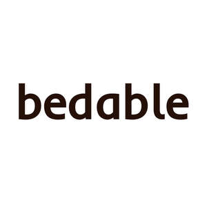

Trade Mark Journal No.2025/020 16 May 2025
UK00004195969 28 April 2025 (20,24)

- Class 20
- Bed mattresses; Mattresses; Mattress toppers; Foam mattresses; Mattress pads; Beds, bedding, mattresses, pillows and cushions; Latex mattresses; Mattress bases; Air mattresses; Sofa beds; Divan beds; Memory foam pillows; Pillows; Latex pillows; Air pillows; Bed chairs; Beds; Bamboo pillows; Chair beds; Cushions [furniture]; Bed frames; Bed frames of metal; Frames for bed canopies; Bed slats; Bed bases.
- Class 24
- Comforters (bedding); Quilted blankets [bedding]; Quilt bedding mats; Textile goods for use as bedding; Disposable bedding of textile; Bed linen and blankets; Comforters for beds; Linens; Textile fabrics for use in the manufacture of bedding; Bed clothes and blankets; Disposable bedding of paper; Crib bumpers [bed linen]; Bed blankets; Blankets (Bed -); Bed linen; Linen for the bed; Linen (Bed -); Cot bumpers [bed linen]; Canopies (bed linen); Silk bed blankets; Bed clothes; Ticks (mattress and pillow coverings); Bed blankets made of cotton; Valances for beds; Crib sheets; Bedsheets; Fabric bed valances; Bedspreads; Bed coverings; Household linens; Bed linen of paper; Coverlets [bedspreads]; Bath sheets (towels); Valanced bed sheets; Bed linen and table linen; Bed quilts; Textile piece goods for making bedding covers; Fitted bed sheets; Bed valances; Bath linen, except clothing; Duvets; Cot sheets; Cot blankets; Sofa blankets; Cotton blankets; Furnishing fabrics; Woven fabrics for use in the manufacture of clothing for use in clean rooms; Textile fabrics for use in the manufacture of beds; Bath linen; Silk fabrics for furniture; Bed sheets of plastic [not being incontinence sheets]; Bed sheets of plastic, not being incontinence sheets; Towels of textiles; Furnishing and upholstery fabrics; Infants' bed linen; Bed pads; Bed sheets of paper; Window furnishing fabrics; Fabrics for the manufacture of furnishings; Pillowcases; Protective loose covers for mattresses and furniture; Pillowcases [pillow slips]; Bed canopies; Bed blankets made of man-made fibres; Bath sheets; Fire-retardant textile shower curtains; Woven fabrics for furniture; Textiles for furnishings; Bed linen made of non-woven textile material; Bathroom towels; Flat bed sheets; Towels; Bath towels; Tea towels; Beach towels; Terry towels; Kitchen towels; Kitchen towels of cloth; Dish towels; Glass cloths [towels]; Hand towels; Hooded towels; Bath wrap towels; Turkish towels; Yoga towels; Towels of textile; Towels [textile]; Towels [of textile]; Face towels; Golf towels; Glass-cloth [towels]; Towels [textile] for the beach; Dish towels for drying; Large bath towels; Face towels of textiles; Kitchen towels [textile]; Kitchen towels of textile; Children's towels; Household linen, including face towels; Hand towels of textile; Textile face towels; Face towels of textile; Towels [textile] for kitchen use; Japanese cotton towels (tenugui); Quilts of towel; Towel sheet; Textile hair drying towels; Turban towels for drying hair; Textile exercise towels; Turkish towel; Mats of linen; Face cloths of towelling; Towels [textile] for use in connection with toddlers; Towels [textile] for use in connection with babies; Cloth napkins; Towels made of textile materials; Face towels [made of textile materials]; Tea cloths; Make-up removal towels [textile] other than impregnated with toilet preparations; Paper pillowcases; Towelling coverlets; Cloths; Linen cloth; Textile fabrics for use in the manufacture of towels; Towels of textile sold in pack form; Linen; Kitchen linen; Duvet covers; Covers for eiderdown and duvets; Covers for duvets; Shams (Pillow -); Pillow shams; Textile covers for duvets; Pillow covers; Comforters [covers]; Mattress covers; Covers for pillows; Valanced bed covers; Comforters; Bed covers; Eiderdowns; Bed warmer covers; Eiderdowns [down coverlets]; Sofa covers; Covers for mattresses; Ticks [mattress covers]; Valance sheets; Pillow slips; Bed covers of paper; Eiderdowns [quilts]; Futon quilts; Silk blankets; Contoured mattress covers; Flannel [fabric]; Fabric curtains; Linen [fabric]; Quilt covers; Duvets filled with goose feathers; Covers for cushions; Cushions (Covers for -); Flannel; Chenile fabric; Shams; Cot covers; Pillow cases; Curtains; Curtains for windows; Window curtains; Blackout curtains; Shower room curtains; Door curtains; Shower curtains.
LUXEBATEX LIMITED